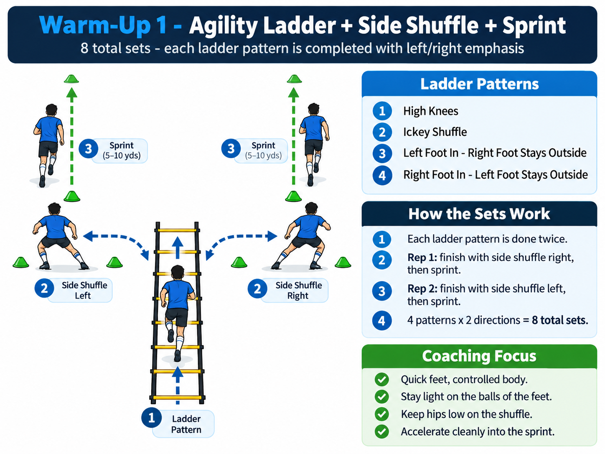
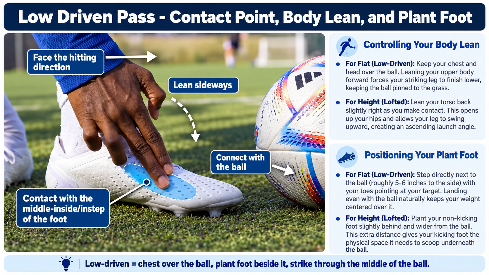

Quick FeetDefensive AgilityLow Driven PassingBoth FeetDistributionCross ClearanceHeadingSlide Tackle3 Final Sprints
SESSION PLAN
Center Back - Individual Training
Use the original Turn Midfielder activity format for agility and low driven distribution. Activity 3 develops cross clearance, safe heading decisions, and controlled slide-tackle technique. Finish with 3 full-speed sprints.
Center back habit: Move quickly to get set, scan before receiving, and play a firm accurate ball with either foot. Recognize when danger requires a clearance.
1
WARM-UP
Agility Ladder + Side Shuffle + Sprint
Prepare the feet, hips and acceleration mechanics
before introducing the ball.

8 TOTAL SETS
Ladder Patterns
1High knees
2Ickey shuffle
3
Left foot in - right foot stays outside
4
Right foot in - left foot stays outside
HOW IT WORKS
Complete Both Directions
1
Complete the ladder pattern.
2
Rep 1 - side shuffle right.
3
Rep 2 - side shuffle left.
4
Accelerate into a 5-10 yard sprint.
VIDEO DEMONSTRATION
Warm-Up Agility
Coaching Focus
✓ Quick feet, controlled body.
✓ Stay light on the balls of the feet.
✓ Keep hips low during the shuffle.
✓ Accelerate cleanly into the sprint.
2
DISTRIBUTION
Low Driven Passing
Develop a firm, accurate pass that travels quickly
along the ground with clean technique on both feet.

CONTACT POINT
Which Part of the Foot Makes Contact?
Use the
middle-inside / instep area of the foot
to create a firm passing surface.
Turn the striking foot slightly outward,
lock the ankle and present a strong surface
toward the intended target.
For the low-driven pass, connect through the
middle of the ball
rather than getting underneath it.
Contact Cue
Face the target → lock the ankle →
connect cleanly → strike through the middle.
BODY POSITION
Controlling Your Body Lean
FLAT / LOW-DRIVEN
Chest and Head Over the Ball
Keep your chest and head over the ball.
Leaning your upper body forward helps the
striking leg finish lower, keeping the ball
driven along the grass.
Chest over ball → strike through →
low follow-through.
HEIGHT / LOFTED
Slight Lean Back
Lean the torso back slightly as you make contact.
This gives the striking leg room to travel upward
and creates a higher launch angle.
Slight lean back → get underneath →
upward follow-through.
SUPPORT FOOT
Positioning Your Plant Foot
FLAT / LOW-DRIVEN
Beside the Ball
Step directly next to the ball -
approximately
5-6 inches to the side.
Point the toes of the plant foot toward the
target and plant roughly even with the ball.
This helps keep your weight centered over
the strike.
Beside the ball → toes to target →
weight over the ball.
HEIGHT / LOFTED
Slightly Behind and Wider
Plant the non-kicking foot slightly behind
and wider from the ball.
The extra distance gives the kicking foot
more room to travel underneath the ball.
1. Approach
Approach at a slight angle and stay balanced.
2. Plant Foot
Place the support foot beside the ball
with the toes toward the target.
3. Body Lean
Keep the chest and head over the ball.
4. Contact
Lock the ankle and strike through the
middle of the ball.
5. Follow Through
Continue the striking leg toward the target.
LEFT FOOT
Low Driven Pass - Left
1. Match the Technique
Reproduce the same body shape used
on the right side.
2. Plant Foot
Plant beside the ball and point toward
the intended target.
3. Locked Ankle
Keep the striking foot firm through contact.
4. Strike Through the Middle
Do not get underneath the ball when
the goal is a low-driven pass.
5. Pass With Pace
The ball should travel firmly along
the ground with minimal bounce.
TECHNIQUE CHECK
Low-Driven Pass - 6 Keys
1
Plant foot beside the ball.
2
Plant foot points toward target.
3
Chest and head stay over ball.
4
Lock the striking ankle.
5
Strike through middle of ball.
6
Follow through toward target.
Passing Cue
Plant beside it → chest over it →
lock the ankle → strike through the middle →
follow through to the target.
3
DEFENSIVE CLEARANCES
Cross Clearance + Heading + Slide Tackle
Read the service, arrive balanced, protect the central goal area, and clear into safe space. Train both sides of the defensive area.
PART A - CROSS CLEARANCE
Clear the Cross Away From Goal
1Start goal-side of the attacker, in position to defend a cross.
2Server delivers a low or bouncing cross from the wide channel.
3Open hips, adjust the feet, and arrive in front of the ball without facing your own goal.
4If an accurate pass is safe, play out. If danger is immediate, clear firmly into a wide, high, or upfield safe area.
12 services6 from each side. Vary near-post and central deliveries. One player serves and retrieves while the other defends, then switch.
DECISION + BODY SHAPE
Read the Cross Before Clearing
1Check your shoulder before the cross to locate the attacker and teammates.
2Protect the middle of goal first; don't overrun the ball toward the touchline.
3Clear away from the penalty spot and central danger zone.
4Follow the clearance by pushing the line out together.
Clearance Cue Scan early → get goal-side → set feet → clear away from danger → step out.
Illustrative setup: both wide-crossing lanes shown. Practice one side at a time and reverse the roles.
PART B - HEADING CLEARANCE
Judge Flight, Win Position, Direct Away
1Check the flight and move feet early to get underneath the ball.
2Communicate clearly, maintain balance, and establish space without pushing.
3When heading is appropriate, use controlled technique to direct the ball high and wide, not centrally toward the goal.
4Land balanced, locate the second ball, and recover shape.
8 minutes Start with footwork and tracking using tossed or softly served balls. Heading repetitions only if permitted by the player's age-group rules and overseen by a qualified coach.
PART C - SLIDE TACKLE
Last Resort - Ball First, Safe Recovery
1Stay on feet if you can delay, contain, or block the pass.
2Slide only when timing and a clear path to the ball make it safe; never tackle through an opponent.
3For technique rehearsal, use a soft target and stationary or gently moving ball. Rehearse left and right sides.
4Recover to feet promptly and play or clear the ball into safety.
8 minutes 4 controlled practice repetitions per side, only on suitable grass or turf with coach supervision. No contact with another player's legs.
VIDEO DEMONSTRATION
Slide Tackle - Left and Right Foot
Technique reference from the provided clip. It shows practice against a padded training target, not a live-game challenge. Work on the motion first; prioritize staying on your feet in matches.
COACHING FOCUS
Choose the Right Defensive Action
✓ Time and space: control and distribute.
✓ Dangerous cross: clear wide or safely upfield.
✓ Aerial ball: judge flight, protect position, clear if appropriate.
✓ Last-ditch challenge: slide only when controlled and safe.
4
FINAL ACTIVITY
3 Full-Speed Sprints
Finish with three maximum-quality acceleration
efforts after the technical work.
START
⚽
FINISH
Sprint 1
Full-speed acceleration.
Sprint 2
Full reset, then repeat with quality.
Sprint 3
Finish the session with your best effort.
Sprint Focus
✓ Powerful first 3 steps.
✓ Drive the arms aggressively.
✓ Push the ground away.
✓ Accelerate through the finish.
✓ Full recovery between sprints.
✓ Quality over fatigue.
Sprint Cue
Push → drive arms → accelerate →
sprint through the finish.